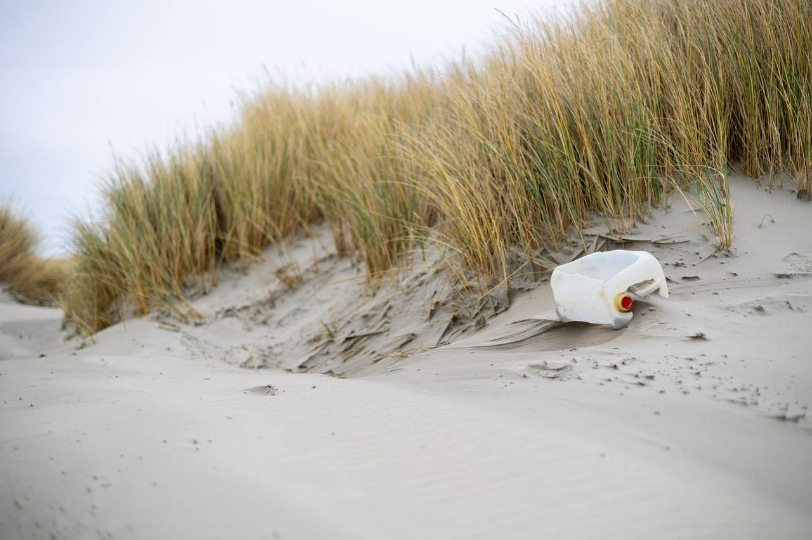

Why Choose Sea Clear?
Ingredients & Their Benefits
How to Use

How to Store

How to Recycle

See the ocean in all its beauty—and keep it just as clear.
Say goodbye to foggy dive masks with Sea Clear, a gentle, biodegradable defog designed for ocean lovers. Non-toxic and locally made in Bali, our formula keeps your vision sharp while respecting the underwater world.
Have questions? Get in touch with us!
Sea Clear is proudly produced by Republic of Soap® – Bali, Indonesia.